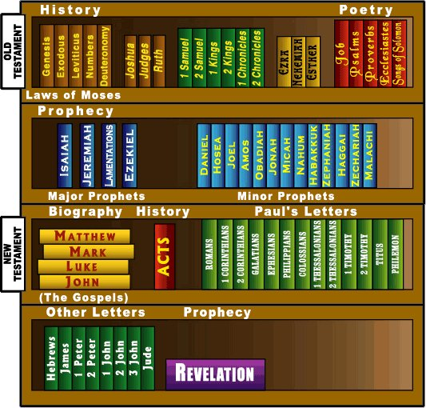

Baibuli kye ki
Ekitabo kimu ekinene
Ekimu ku bintu bye tusooka okuzuula ku Baibuli si kitabo kimu n’akatono, wabula nkuŋŋaanya y’ebitabo 66! wadde nga tusobola okubiyita ebitabo, mu butuufu Baibuli erimu emboozi, ebyafaayo, ebitontome n’ennyim- ba, ebikwata ku bulamu bw’abantu n’ebbaluwa ezi- werako (kino kyaliwo nga email tennabaawo, ojjukira?)
Olw’okuba erimu ebika by’ebiwandiiko bingi eby’en- jawulo Baibuli tetera kusomebwa okuva ku lupapula okutuuka ku lupapula ng’ebitabo ebisinga eby’omulembe bwe biri (wadde nga mazima ddala esobola okusomebwa). R,ather Abakkiriza batera okujja mu Baibuli okusoma ebitundu ebitongole ng’emboozi ezikwata ku Yesuoba ennyimba ezitendereza Katonda
Ekifaananyi ekiri waggulu n’ekinene ekiri ku ntandikwa y’ekitabo kino kiraga engeri ebitabo bya Baibuli gye bikuŋŋaanyiziddwamu ebibinja

Okusobola okutegeera ensonga lwaki Baibuli erimu ebitabo bingi eby’enjawulo, kiyamba okumanya katono ku byafaayo bya Baibuli n’engeri gye yawandiikibwamu. Katonda yatandika okukubiriza abantu okuwandiika obubaka bwe eri abantu emyaka nga 3000 egiyise (ennaku ezaasooka zifuuse kizibu katono) mu bbanga ery’emyaka nga 1600, Abawandiisi 40 ab’enjawulo okuva mu biseera eby’enjawulo eby’ebyafaayo n’ebifo eby’enjawulo okwetooloola ensi baawandiika ebyo Katonda bye yabaluŋŋamya okwogera. era naye, wadde nga waliwo ekibinja kino eky’abawandiisi ab’enjawulo, Baibuli okusinga eyogera emboozi emu: emboozi obubaka obwo eri ensi.
Baibuli eyinza okulabika ng’ekitabo EKIKULU eky’entiisa. abantu abamu balowooza oba babadde nabyo nti Baibuli ya kyama oba engeri y’okutegeera. bayinza n’okutegeezebwa nti ba Minisita bonna abasosodooti bokka be basobola okutegeera Bayibuli mu butuufu.
Eno y’ensonga lwaki kiyamba okumanya Baibuli kye DDALA: obubaka bwa katonda eri abantu bonna buli wamu, obu-gendereddwamu okusomebwa Abantu B aabulijjo *buli omu!+

Endagaano kye ki?
Ekigambo endagaano kiyinza okutuleetera okulowooza ku kiraamo (ekiraamo ekisembayo n’endagaano) . Ekiwandiiko eky’amateeka ekirangirira omuntu nti ayagala ku bigenda mu maaso mu bintu n’ebintu ng’afudde. Mu Baibuli edda nga Yesu tannajja ku nsi Katonda yasooka kulaga by’ayagala abantu bamumanye era bamusinze nga Katonda waabwe YOKKA mu kuddamu Katonda; yandiwaddeyo okusonyiwaAbasajja b’ebibi byabwe enjawulo esooka mu Baibuli Endagaano Enkadde y’emboozi y’engeri abantu
Olw’okuba abantu TEBAgoberera Katonda by’ayagala, Katonda yateekawo engeri empya gye bayinza okusonyiyibwa: okusindika Yesu, omwana we omu yekka, ku nsi okufiirira ebibi byabwe. Emboozi za Yesu n’abo abaasalawo okumugoberera ze mboozi z’endagaano empya eya Katonda, zonna zijja, eri omuntu olw’olulyo lw’omuntu lwe yatonda. Era bwekityo, Baibuli egabanyizibwamu endagaano enkadde n’endagaano empya: ebitabo ebyawandiikibwa nga yesu tannajja mu nsi n’ebyo ebya- wandiikibwa oluvannyuma.

Nfuna ntya ekitundu mu Baibuli?
Okufuula okusoma Baibuli kuli wano kiyamba nnyo okumanyiira amannya g’ebitabo bya Baibuli. newankubadde nga kiyinza okulabika ng’omulimu Omuzibu kisinga okuyamba okukwata amannya gonna mu mutwe okusobola okwekolera okusoomoozebwa okukwata amannya 10 mu mutwe olu- naku. Bw’otandika okukwata mu mutwe 10 eziddako kakasa nti osooka kwogera ezo ezisooka ze wak- wata mu mutwe osobole Okusoma.
olukalala lw’ebitabo bya Baibuli awamu n’ebifupi byabyo nga byawuddwamu Endagaano Enkadde n’Endagaano Empya lula- bika ku lupapula oluddako kozesa kino ng’obulagirizi bwo oku- bikwata mu mutwe. agamu ku mannya Kiyinza okulabika nga kizibu nnyo okwatula bwoba olina ekibuuzo kyonna ku ngeri y'okwatula erinnya ly'ekitabo tolwawo kubuuza omusomesa w'okusoma baibuli oba omuweereza mu kkanisa gy'ogenda- mu.
Ggulawo Baibuli ku lupapula lwonna ojja kulaba obutundu bungi obutonotono, nga buli kamu kaliko ennamba. Zino ziyitibwa ennyiriri okukuŋŋaanyizibwa kw’ennyiriri kiyitibwa essuula era (essuula zonna tezirina muwendo gwa nnyiriri gwe gumu) ekijjako kino kyokka bye bitabo bya obadia mu ndagaano enkadde n’ebitabo bya ssente 2 ne 3 Yokaana ne Yuda mu ndagaano empya zigattibwa mu ssuula Ebitabo ebiri mu Bayibuli Ebitabo by’Endagaano Enkadde

Abantu bwe boogera ku bitundu ebitongole mu Baibuli, bakozesa ekiyitibwa "essuula n'olunyiriri." Singa omuntu ayagala ozuule olunyiriri olw’ekkumi n’omukaaga mu ssuula ey’okusatu ey’ekitabo kya Yokaana, osanga wandirabye nga luwandiikiddwa bwe luti: Yokaana 3:16.
Wano okukwata amannya g’ebitabo bya Baibuli mu mutwe we kiyamba: ojja kumanya nti Yokaana kye kitabo eky’okuna mu Ndagaano Empya. Oluvannyuma lw’okuzuula ekitabo kya Yokaana, olwo wandinoonyezza essuula ey’okusatu, era, okusembayo, olunyiriri olw’ekkumi n’omukaaga. Ebigambo byonna ebikwata ku bitundu mu Baibuli biwandiikiddwa nga waggulu ne Yokaana 3:16 (oluusi enfunyiro y’ekitabo ekozesebwa). Singa ennyiriri ezisukka mu emu ze zoogerwako, zandiwandiikiddwa bwe ziti: Okuva 20:1-17. Kino kitegeeza nti wandisanze ennyiriri ekkumi n’omusanvu ezisooka mu ssuula ey’amakumi abiri mu kitabo ky’Okuva. Ekitundu kya keeki!
ENDAGAANO ENKADDE
- Olubereberye
- Okufuluma
- Eby’Abaleevi
- Ennamba
- Ekyamateeka
- Yoswa
- Abalamuzi
- Luusi
- 1 Samwiri
- 2 Samwiri
- 1 Bakabaka
- 2 Bakabaka
- 1 Ebyomumirembe
- 2 Ebyomumirembe
- Ezera
- Nekkemiya
- Esteri
- Omulimu
- Zabbuli
- Engero
- Omubuulizi
- Oluyimba lwa Sulemaani
- Isaaya
- Yeremiya
- Okukungubaga
- Ezeekyeri
- Danyeri
- Koseya
- Yoweri
- Amosi
- Obadia
- Yona
- Mikka
- Nahum
- Kaabakuuku
- Zefaniya
- Haggai
- Zekkaliya
- Malichi
ENDAGAANO EMPYA
- Matayo
- Mark
- Lukka
- Yokaana
- Ebikolwa by’Abatume
- Abaruumi
- 1 Abakkolinso
- 2 Abakkolinso
- Abaggalatiya
- Abaefeso
- Abafiripi
- Abakkolosaayi
- 1 Abasessaloniika
- 2 Abasessaloniika
- 1 Timoseewo
- 2 Timoseewo
- Tito
- Philemon
- Abebbulaniya
- Yakobo
- 1 Peetero
- 2 Peetero
- 1 Yokaana
- 2 Yokaana
- 3 Yokaana
- Yuda
- Okubikkulirwa